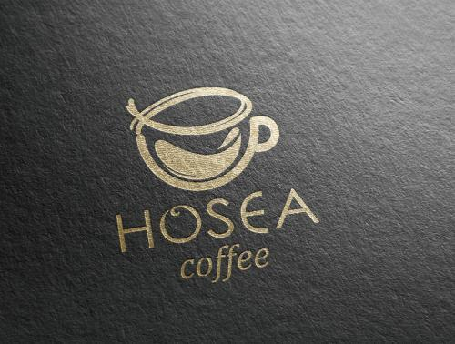
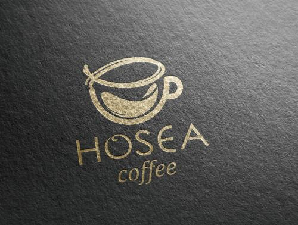

 来一杯咖啡吗？
- 拿铁
- 卡布奇诺
- 美式咖啡

拿铁
“拿铁”是意大利文“Latte”的 音译，代表“牛奶”， 拿铁咖啡(CoffeeLatte)是花式咖啡的一种， 是咖啡与牛奶交融的极至之作。意式拿铁咖啡为纯牛奶加咖啡，美式拿铁则将部分牛奶替换成奶泡， 本地的拿铁多为此种。 那句著名的“我不在咖啡馆，就在去咖啡馆的路上”是一位音乐家在维也 纳说出来的。维也纳的空气里，永远都飘荡着音乐和拿铁(Latte)咖啡的味道。
 来一杯咖啡吗？ |
|
|
|
拿铁“拿铁”是意大利文“Latte”的 音译，代表“牛奶”， 拿铁咖啡(CoffeeLatte)是花式咖啡的一种， 是咖啡与牛奶交融的极至之作。意式拿铁咖啡为纯牛奶加咖啡，美式拿铁则将部分牛奶替换成奶泡， 本地的拿铁多为此种。 那句著名的“我不在咖啡馆，就在去咖啡馆的路上”是一位音乐家在维也 纳说出来的。维也纳的空气里，永远都飘荡着音乐和拿铁(Latte)咖啡的味道。 |
|
版权 © coco猫须 |
|